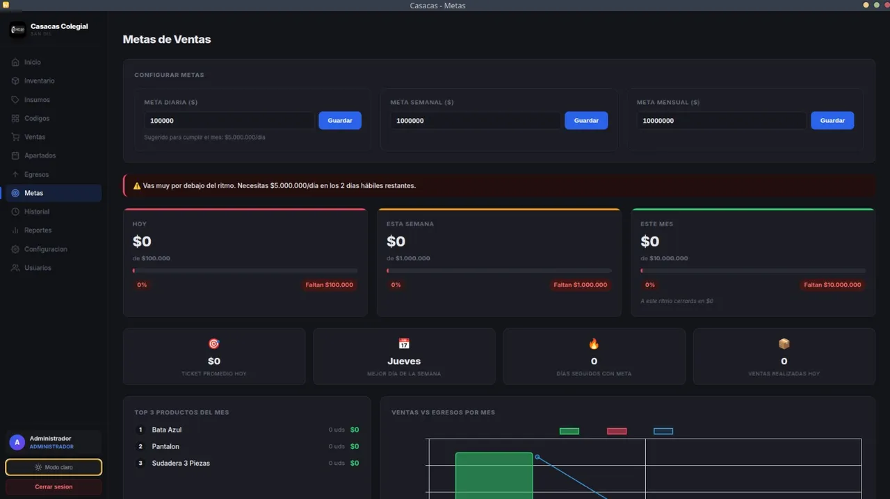

Cliente real · En producción
Casacas Colegial Sistema POS e Inventario
- Problema
- Un negocio de uniformes necesitaba controlar ventas, inventario y caja.
- Solución
-
App de escritorio con:
- Modelo relacional de más de 15 tablas
- Transacciones atómicas con rollback
- Anulación de ventas con restauración de inventario
- Control de caja por turno y apartados
- Impresión térmica ESC/POS
- Reportes exportables a Excel
Se usa a diario en la operación del cliente.
- Electron
- Node.js
- better-sqlite3
- ESC/POS
- XLSX
- Chart.js
- JSBarcode